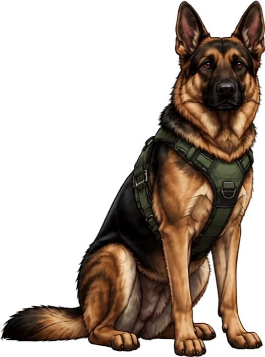
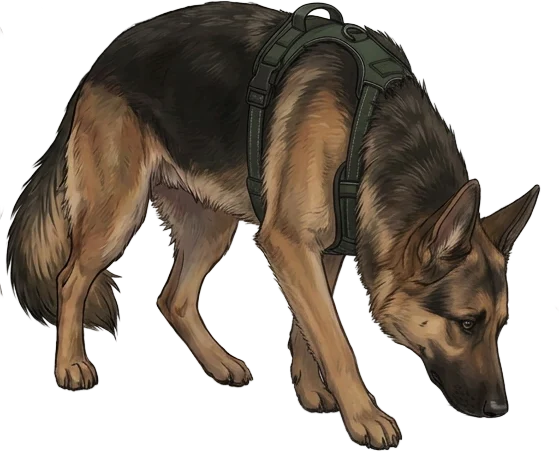
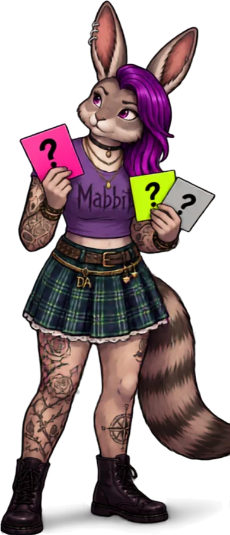
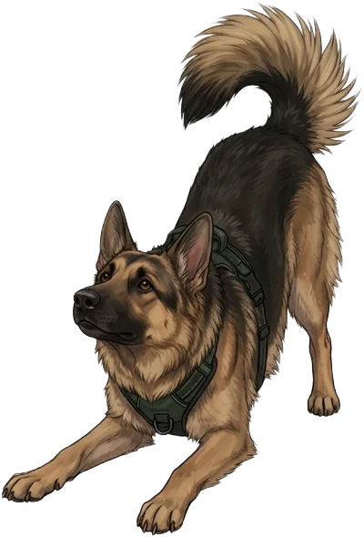
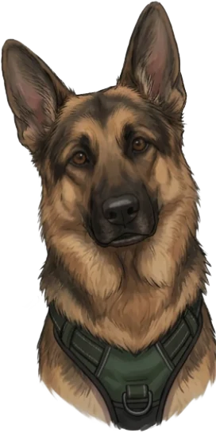

Case file 001 · Academic navigation · Free resource
A practical field guide to finding out what the prompt actually asks, what counts as evidence, and what to do first.
Free · no purchase required
Deconstructing AcademiaLearn the rules. Question who wrote them.
By the end you will turn one real assignment prompt into a task list, a short list of rules you must meet, and a first move you can make today. Plan on about 20 minutes and one pen.
Your guides
Mabbit asks who wrote the rule and what it assumes. She is skeptical of the prompt, never of you.
Whonah doesn't talk. He finds the detail, shows the step, and marks the checkpoint. When he points, look there.
How this guide works: Mabbit frames it. Whonah shows the move. You do it on your own prompt. Then you check your work.

Decode Your Assignment · Free resource 0012
Mabbit's second look
"Critically analyze." Great. Analyze what, using whose evidence, judged by which rubric?
A prompt is a set of rules written by someone who already knows what a good answer looks like. Your job is to get that out of their head and onto your page.
Starting guesses, not a standard. Instructors use these loosely, so confirm yours.
| Task word | Usually asks you to |
|---|---|
| Describe, summarize | Report accurately what is there. No verdict needed. |
| Explain | Say how or why something works, with reasons, not just facts. |
| Analyze | Break something into parts and show what each part does or how they connect. |
| Compare | Set two or more things against stated criteria, then say what the comparison shows. |
| Argue, evaluate | Take a position, defend it with evidence, and deal with the strongest objection. |
| Reflect | Connect the material to your own experience or thinking and say what changed. |
Decode Your Assignment · Free resource 0013

Whonah works the trail one scent at a time. So do you. Four passes, four marks, pen on paper.
Checkpoint
Whonah's rule: if a word could mean two things, mark it. A marked word is a question you can send.
Decode Your Assignment · Free resource 0014
Sample prompt written for this guide. It is not from a real course. Your instructor's wording will differ.
Analyze how one policy affected a community you choose. Write a 1,200-word paper using at least four scholarly sources. You should address multiple perspectives. Cite in APA.
Mabbit reads it
Whonah's marks
First move
"Do government reports count as scholarly sources, and is two perspectives enough? Is there a rubric I can see before I start?"
One message, two specific questions, sent before the work starts.
Decode Your Assignment · Free resource 0015
Before you decide how you'll be graded, sort what you've heard from what you can trace.

| Claim | Evidence | Not shown |
|---|---|---|
| "The rubric says critical thinking is 30%." | A label and a percentage, on the page. | What critical thinking looks like in this course. |
| "The instructor likes a strong voice." | One classmate's impression. | Anything from the instructor or the rubric. |
| "Late work loses 10% a day." | The syllabus, quoted exactly. | Whether there is an exception process. |
Mabbit's second look
Missing data doesn't prove someone is hiding something. It proves the page can't answer your question. So ask the person who can.
| What I heard | Where it comes from | What I still need |
|---|---|---|
Decode Your Assignment · Free resource 0016

Use the real prompt, on this page or on the original. Whonah's four passes, in order. Don't paraphrase. The fog lives in the exact wording.
Decode Your Assignment · Free resource 0017
A vague word is a question with its coat on. Pull out the ones that could cost you, then turn each into one specific question.
Mabbit's second look
If nobody wrote down what "good" means, who gets to decide after you've turned it in?
| Vague word or missing detail | What it could cost me | The specific question |
|---|---|---|
Two questions at most. Specific, boring, easy to answer. Send it before you start.
My first move today
A question to send, a source to find, or a paragraph to draft. Small enough to finish today.
Decode Your Assignment · Free resource 0018

Whonah is looking at your page. Check it against these. If an answer is no, go back to that pass.
Model answer for the sample prompt
Tasks: analyze effects; address multiple perspectives. Rules: 1,200 words, four or more scholarly sources, APA. Fog: should, multiple, scholarly. Question: "Do agency reports count as scholarly, and is two perspectives enough?" Yours won't match word for word. It should match in kind.
Decode Your Assignment · Free resource 0019
The prompt is a rulebook. Read it like one.
Verbs are tasks. Numbers are rules. "Should," "multiple," and "scholarly" are questions waiting for the person who wrote them.
What this can't tell you
Do next
Which word in my prompt was doing the most work without being defined?
This guide cites no outside sources. The sample prompt and the grading claims are invented for teaching and are not from real courses. The task-word table is a general guide, not a standard.
This resource is free because useful educational tools shouldn't depend on someone's ability to pay. If it helped, you can support Deconstructing Academia with an optional contribution, or by checking out Mabbit & Whonah merch when it returns. No purchase required. Keep learning.
deconstructingacademia.com · Free resource 001
Decode Your Assignment · Free resource 00110